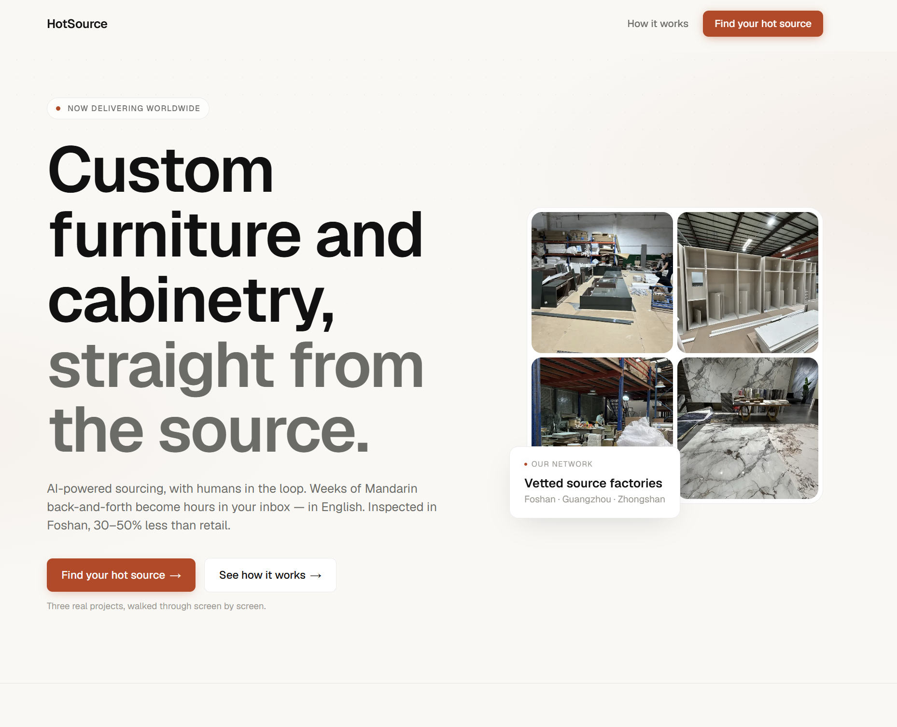
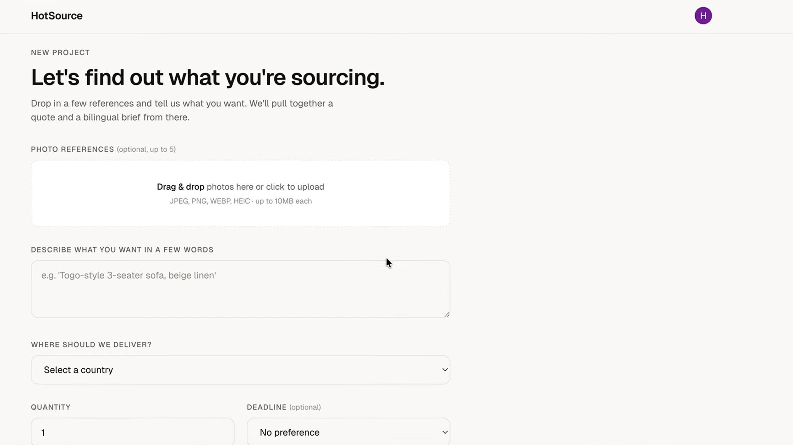
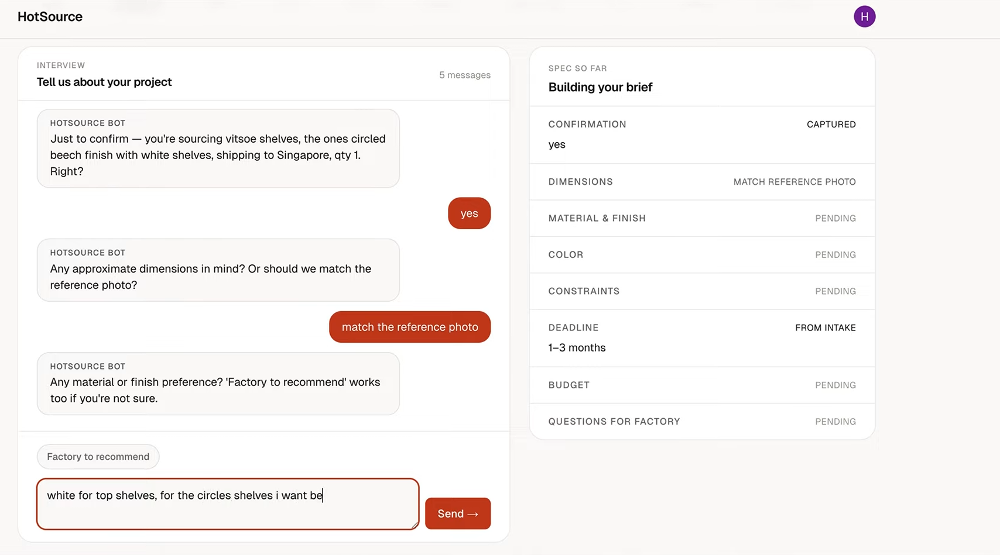
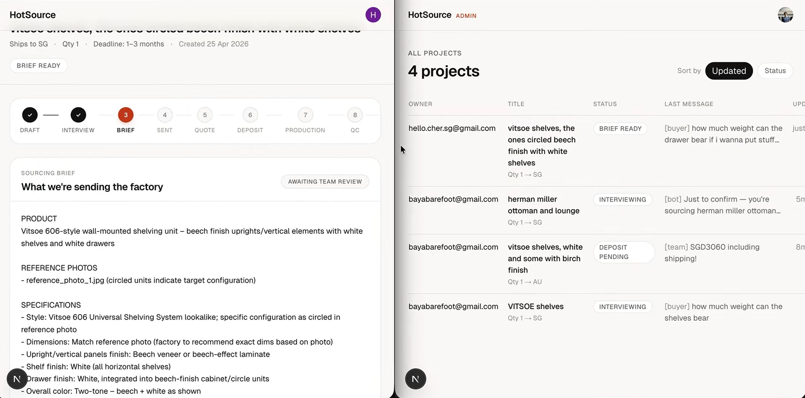
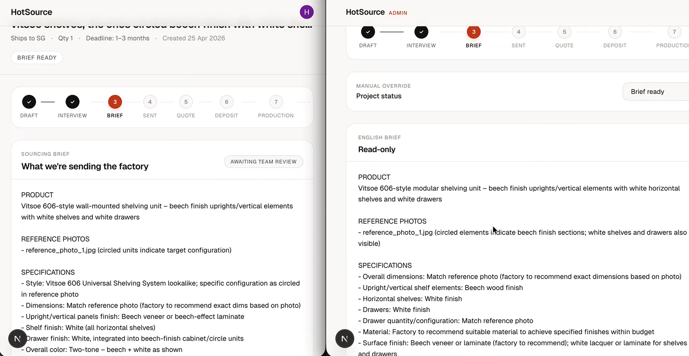
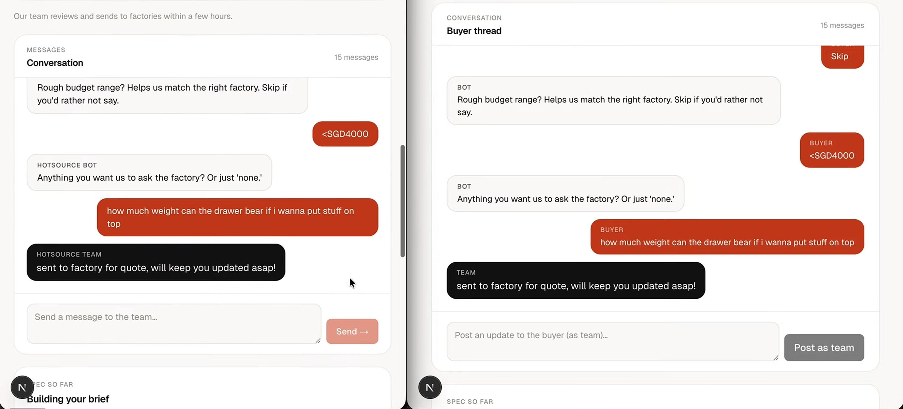
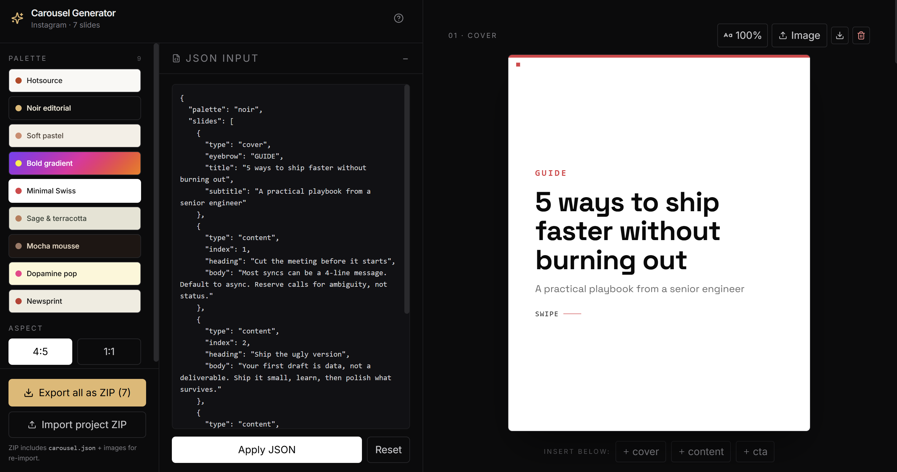

A factory-direct platform that brings custom furniture, cabinetry, and renovation materials from vetted Chinese factories to overseas buyers, at 30 to 50 percent below retail.
Co-founder, on product and spec. As the trained architect and interior designer of the two of us, I owned turning vague buyer requests into tight, factory-ready specs and keeping the process sharp. TC, my co-founder, is a full-stack engineer, trained cabinet-maker, and fluent in Mandarin, and he built the platform. The factory side, the China relationships, and the trips we handled together.

Buying custom furniture or cabinetry straight from a Chinese factory is far cheaper and more flexible than local retail, but the gap between an overseas buyer and a Foshan factory is wide enough that most people never cross it. Buyers know the good factories are out there, but they are scared of the quality lottery, blocked by the language barrier, unable to turn what they want into a spec a factory can build, and unsure who to even approach. There is excellent work in Foshan and a lot of bad work, and from the outside you cannot tell them apart.
I kept watching my freelance interior clients hit the wall, and TC hit it renovating his own place. So we flew to Foshan, walked the factories, and found higher quality, better machinery, and lower prices than at home. The obvious thought was to bring it back to everyone else.
We launched on our personal Instagram and reached around 6K revenue within two weeks, at a 20% profit, with leads still live today. Then we pressure-tested the why on Reddit, which confirmed the fears above. That reframed the product for me: it was never about access, since the factories are already reachable. It was about removing the fear and the friction, so people could get this quality without flying in.
Today HotSource is a live intake platform, and most of what happens after the form is still done by hand, deliberately.
Enquiries used to land on my personal phone and overwhelm me, and I had to relay each one to TC before we could move. So we wired the form intake into Slack, where we both see every lead live the moment it arrives, and we only switch to a phone call once an order is confirmed. We also built an internal platform where we can reply to these queries live when users choose to "Plan a Project" on the site.


The intake form, then the interview that turns a vague reference photo into structured spec fields (material, finish, dimensions) confirmed back to the buyer in plain language.

Every project moves through one tracked pipeline (draft, interview, brief, sent, quote, deposit, production, QC, shipped, delivered), so nothing sits only in someone's head.

The brief drafts itself in English and Mandarin from the interview, but it's reviewed by a human before it ever reaches a factory.

Buyer and team see the same thread from two sides: what looks automated to the buyer is a human reading and replying on the other end.
Behind the tracked pipeline, the routing, factory conversations, spec-building, and quoting all stay manual. We run it by hand not because we cannot build, but because that is how we learn what actually needs building before we automate it.
Two things became clear from doing this by hand, and the second one set the roadmap.
Most buyers cannot picture or articulate what they want, let alone the specs. My job is to take a fuzzy idea and turn it into something a factory can quote and build.
The factories barely document their own catalogues, capabilities, and materials. That undocumented knowledge, not the buyer side, is the real bottleneck.
The obvious move would be to put AI on the intake now, but an AI layer is only as good as the catalogue data behind it, and that data is not usable yet. So the next step is documenting the catalogues properly, which is what lets AI answer buyers fast and lets us step in less. Automating before the data is ready would only automate guesswork.
Most leads now come from strangers on Instagram, and building carousels by hand ate time, so we built an internal carousel generator. Reels convert best and cost the most to produce, so the next build is an agent-based video generator that runs from storytelling to execution.

A JSON-driven carousel generator: feed it copy, get an on-brand Instagram carousel back. Built once the manual version proved itself worth automating.
The pattern is always the same: find the manual bottleneck, prove it is worth removing, then build the tool that removes it.
The buyer gets one all-in price in their currency, our margin built in rather than charged as a separate fee, so they handle a single number instead of stitching together a factory price, logistics, and tax.
The core model assumes the buyer installs for themselves, which works overseas but broke down at home. Singapore buyers want the construction and installation handled. Rather than force the global model on the local market, we split it and launched a separate branch, Touchwood, for carpentry, cabinetry, and installation in Singapore.
Plenty of homeowners sub the rest out to their own contractors, which we encourage, because that is the whole idea: provide the parts we can guarantee at a price that makes a better home affordable, and let the buyer assemble the rest. The product is modular by design. Take the piece you want done well, and keep control of the rest.
HotSource is a side project, run part-time as much to learn as to grow, so the numbers are small on purpose. We take one or two leads a week, and since every order is manual and involved, even that keeps us fully occupied and is where most of the learning happens.
What matters is that it is real: strangers find us, pay, and receive delivered custom orders. The point was never scale. It was to prove people will pay, and to learn what building it properly would take.
Two things stuck, and both are product work.
The first is that technology does not have to be clever to be valuable. The highest-leverage things we built were unglamorous (a shared intake and a generator that kills a repetitive task), and most of the value was in fixing tedious workflows and moving information cleanly between people, not in any flashy idea.
The second I value most. I learned to translate what a client actually wants, which is rarely what they first say.
Getting to the real requirement under the stated one, through conversation rather than assumption, is the core of this work. It is also, almost exactly, the core of a product manager's job.